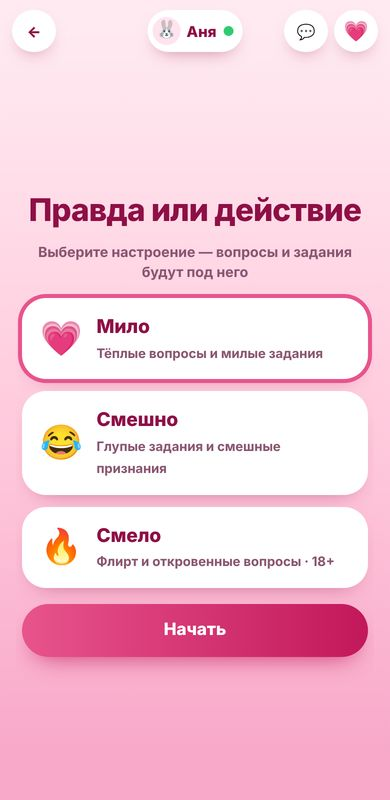
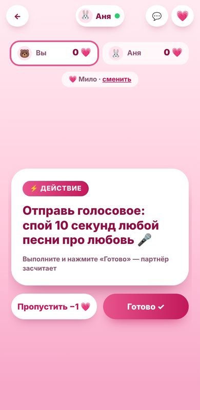

Правда или действие для пар онлайн
Знакомая игра, переделанная для двоих и для расстояния. Вы по очереди выбираете «правду» или «действие», отвечаете на вопросы и выполняете задания через голосовые, фото и видео, а партнёр решает, засчитать ли. Каждый играет со своего телефона.
Откроется игра, там появится ссылка для партнёра
Как играть
- Нажмите кнопку выше и отправьте партнёру ссылку из игры.
- Выберите настроение, от него зависят вопросы и задания.
- По очереди выбирайте «Правду» или «Действие». Карточка с заданием появляется у обоих.
- Ответьте или выполните задание и нажмите «Готово». Партнёр решает, засчитать ли.

Три настроения
- Милое — тёплые вопросы о вас двоих: «Какая наша фотография твоя любимая?», «Каким ты представляешь наше утро вдвоём?» Задания вроде записать голосовое «спокойной ночи» самым тёплым голосом.
- Весёлое — смешные признания и глупые задания: изобразить диктора прогноза погоды, зачитать детский стишок в стиле рэпа, спеть 10 секунд песни про любовь.
- Смелое (18+) — более откровенные вопросы и задания для взрослых пар. Перед началом игра спросит, есть ли вам 18 лет.
В каждом настроении по 30 вопросов и 30 заданий, и в одной партии они не повторяются.
Очки 💗
Чтобы было интереснее, за каждый ход начисляются сердечки: правда — +1 💗, действие — +2 💗, пропуск — −1 💗. Действие сложнее, поэтому оно приносит больше. Счёт виден обоим, а в конце понятно, кто был смелее.

Почему задания подходят для расстояния
В обычной «Правде или действии» многие задания требуют быть рядом. Здесь все действия можно выполнить в переписке или по видеозвонку: отправить голосовое, фото или короткое видео, включить песню, изобразить что-то на камеру. Поэтому игра хорошо подходит парам в отношениях на расстоянии, а также тем, кто просто хочет весело провести вечер в переписке.
Как сделать вечер ещё лучше
- Начните с милого настроения, а к смелому переходите, когда оба захотят.
- Включите видеозвонок, тогда задания выполнять ещё смешнее.
- Договоритесь, что пропуск — это нормально. Игра должна быть в радость обоим.
- После «Правды или действия» можно сыграть в вопросы друг другу и проверить, насколько вы совпадаете.
В игре есть чат, так что обсуждать ответы можно прямо в ней.
Частые вопросы
Можно ли играть в «Правду или действие» вдвоём на расстоянии?
Да, игра сделана именно для этого. Каждый играет со своего телефона, а задания выполняются через голосовые, фото, видео или видеозвонок.
Кто решает, выполнено ли задание?
Партнёр. После того как вы нажмёте «Готово», у него появятся кнопки «Засчитать» и «Не засчитать».
Что значит 18+?
Это смелое настроение с более откровенными вопросами и заданиями. Оно только для взрослых, перед началом игра просит подтвердить возраст.
Сколько вопросов в игре?
В каждом из трёх настроений по 30 вопросов и 30 заданий, в одной партии они не повторяются.
Нужно ли регистрироваться?
Нет. Достаточно открыть игру и отправить ссылку партнёру. Имя и аватар можно указать по желанию, а профиль сохранить через Google, если хотите находить друзей.
Работает ли на телефоне?
Да, игры сделаны в первую очередь для телефона. Они открываются в обычном браузере, ничего устанавливать не нужно.
Это бесплатно?
Да, играть можно бесплатно. На сайте может показываться реклама.
Откроется игра, там появится ссылка для партнёра